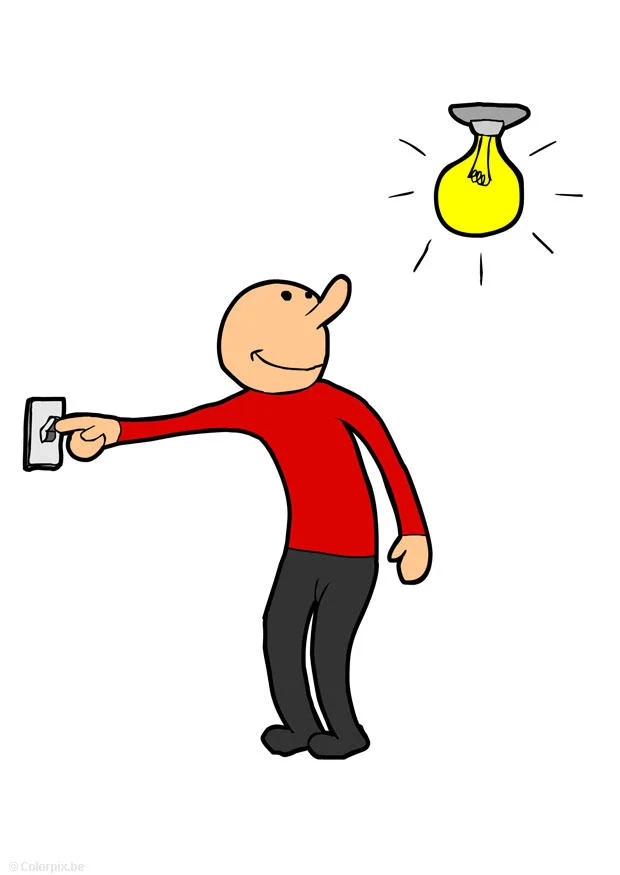

Semántica operacional
- Árboles en ocaml
- AST en ocaml
- Sistemas de transición
- Recursión y match en ocaml
- Ejemplos (muchos!)
- Switch
- Switch2
- Three counter machines (Plotkin)
- Untyped Arithmetic Expressions (TAPL)
- Cálculo lambda (TAPL)
- While 3CM
- Intervalo
- Presentación de lab 1, tp1, tp2
- Consultas lab 1
Árboles en ocaml
type tree = Node of tree * tree
| Leave of string
let a1:tree = Leave "hola"
let a2:tree = Node(
Leave "izq",
Leave "der"
)
let a3:tree = Node(
Node(
Leave "izq",
Leave "der"
),
Leave "masder"
)
Árboles en ocaml
type tree = Node of tree * tree
| Leave of string
let a1:tree = Leave "hola"
let a2:tree = Node(
Leave "izq",
Leave "der"
)
let a3:tree = Node(
Node(
Leave "izq",
Leave "der"
),
Leave "masder"
)
Árboles en ocaml
type tree = Node of tree * tree
| Leave of string
let a1:tree = Leave "hola"
let a2:tree = Node(
Leave "izq",
Leave "der"
)
let a3:tree = Node(
Node(
Leave "izq",
Leave "der"
),
Leave "masder"
)
Árboles en ocaml
type tree = Node of tree * tree
| Leave of string
let a1:tree = Leave "hola"
let a2:tree = Node(
Leave "izq",
Leave "der"
)
let a3:tree = Node(
Node(
Leave "izq",
Leave "der"
),
Leave "masder"
)
AST: Árbol de sintaxis abstracto
float matchO(char *s) { /* find a zero */
if (!strncmp(s, "0.0", 3))
return 0.;
}
AST: Árbol de sintaxis abstracto
type expr = Lit of int | Sum of expr * expr | Times of expr * expr
2 * 3 + 1
Sum(
Times(Lit 2, Lit 3),
Lit 1
)
1 * 2 * 3
Times(
Lit 1
Times(Lit 2, Lit 3),
)
(1 * 2) * 3
Times(
Times(Lit 1, Lit 2),
Lit 3
)
Ejercicio interactivo
https://replit.com/@jisbruzzi/ex1-structural-recursion-ocaml
Sistemas de transición[Plotkin 1.2]
- Dupla $(\Gamma,\to)$
- $\Gamma$ conjunto de configuraciones
- $\to$ relación entre elementos de $\Gamma$.
- $\to \subset \Gamma \times \Gamma$
ST terminales[Plotkin 1.2]
- Tripla $(\Gamma,\to,T)$
- No se puede transicionar desde un elemento de $T\subset\Gamma$
- $\forall \gamma \in T \forall \gamma' \in \Gamma. \gamma \not\to \gamma'$
ST determinísticos [TAPL 3.5.4]
- $\to$ es una función
- $ \gamma\to\gamma' \land \gamma\to\gamma'' \implies \gamma'=\gamma''$
Ejemplo: lenguaje Switch
type operatons = Switch operations | End
type state = On|Off
type sconfig = operations*state

let c1=(Switch (Switch (Switch End)),On);;
let c2=(Switch (Switch End),Off);;
let c3=(Switch End,On);;
let c4=(End,Off);;
(Switch(x),On)$\to$(x,Off)(Switch(x),Off)$\to$(x,On)- $T=\{$
(End,On),(End,Off)$\}$
(Switch(x),On)$\to$(x,Off)(Switch(x),Off)$\to$(x,On)- $T=\{$
(End,On),(End,Off)$\}$
type operatons = Switch operations | End
type state = On|Off
type sconfig = operations*state
exception Terminal
let small_step (config:sconfig):sconfig =
match config with
| (Switch x, On) -> (x, Off)
| (Switch x, Off) -> (x, On)
| (End, _) -> raise Terminal;;
let rec big_step (config:sconfig):sconfig =
match config with
| (Switch End, On) -> (End,Off)
| (Switch End, Off) -> (End, On)
| (Switch x, On) -> big_step (x,Off)
| (Switch x, Off) -> big_step (x, On)
| (End, _) -> raise Terminal;;
Ejemplo: lenguage pp
Aclaración: listas
type operation = Push of int | Times | Add
type ppconfig = (operation list * int list)
(Push x::tl,s)$\to$(tl,x::s)(Add::tl,a::b::s)$\to$(tl,(a+b)::s)(Times::tl,a::b::s)$\to$(tl,(a*b)::s)- $T=\{$
([],x)$\}$
Big step vs small step
small step
big step
3*4+2*3$\to$12+2*3$\to$12+6$\to$18
3*4+2*3$\to$18
(Switch (Switch (Switch End)),On)$\to$
((Switch (Switch End),Off)$\to$
(Switch End,On)$\to$
(End,Off)
(Switch (Switch (Switch End)),On)$\to$(End,Off)
([Push 1; Push 2;Add];[])$\to$
([Push 2;Add];[1])$\to$
([Add];[1;2])$\to$
([];[3])
([Push 1; Push 2;Add];[])$\to$
([];[3])